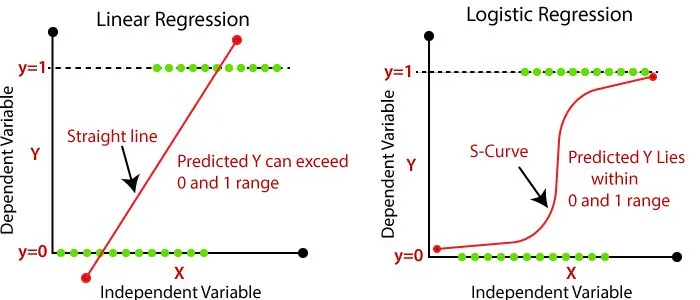
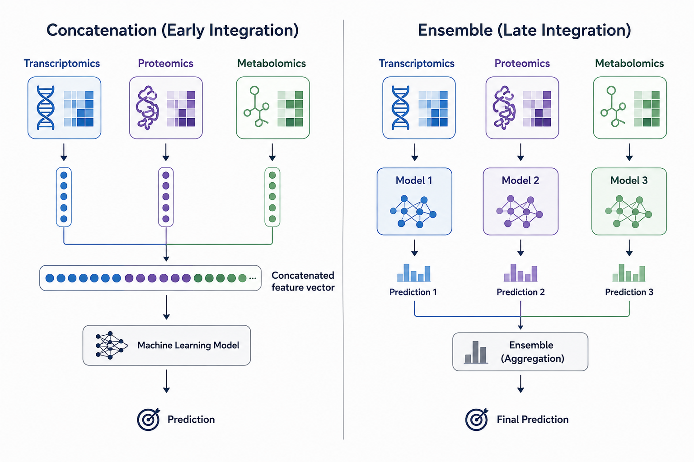
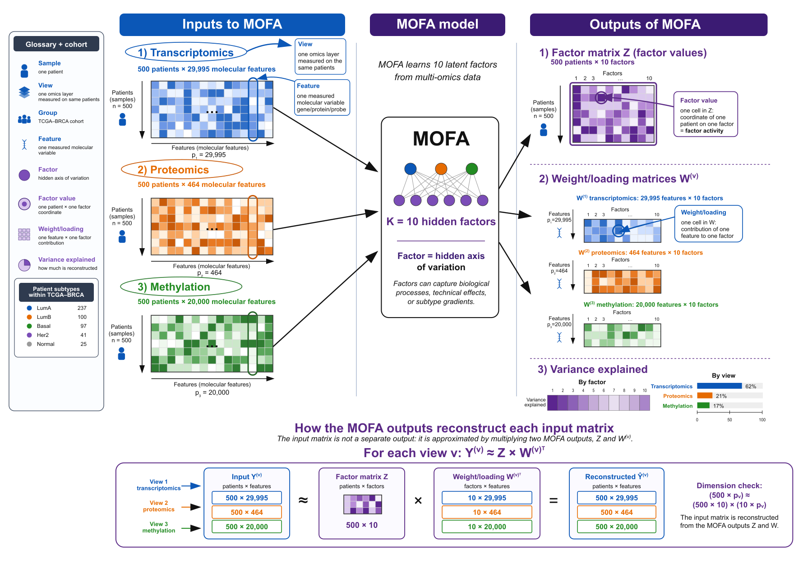
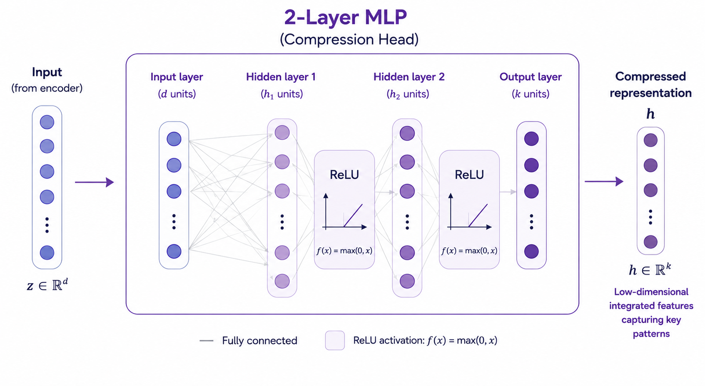
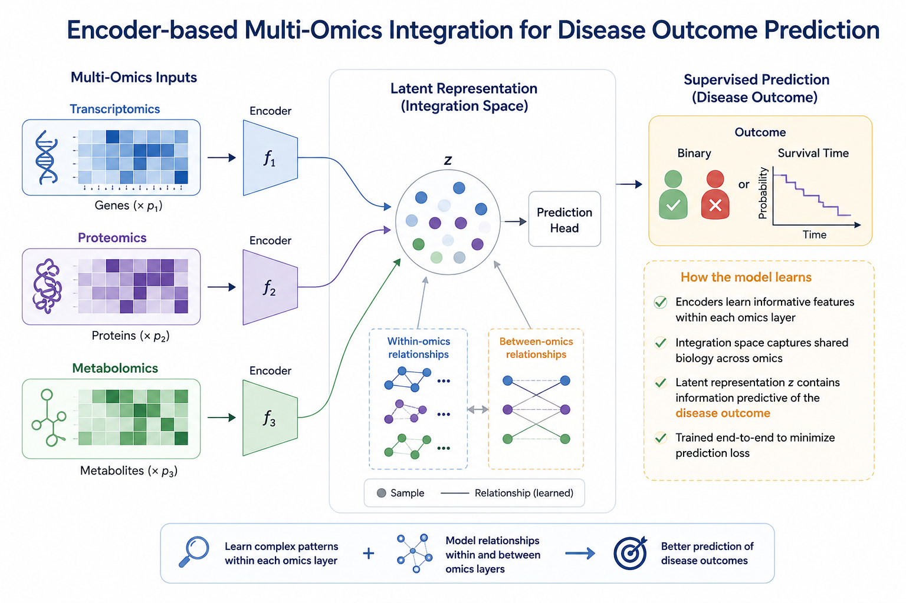

Session 2#
Creating Multi-Omics Profiles#
General#
The data are:
File |
Description |
|---|---|
|
Gene-expression features |
|
Protein-abundance features |
|
DNA-methylation features |
Each table is already sample-aligned, has no missing patient data, and uses the patient ID as the index.
The prediction target is the subtype column.
Part 1 - Linear Integration Methods#
1.1 Linear Classifiers#
Linear classifiers are among the simplest models for making predictions. Consider ice cream sales as a function of temperature — we might assume a straightforward linear relationship where, for every one degree increase in temperature, 1000 additional ice creams are sold.
The same principle can be applied in a biological context, where we aim to model the onset of a disease as a function of changes in omic features, such as gene transcripts. However, unlike predicting a continuous value like ice cream sales, disease onset is a binary outcome — either yes or no.
To handle this, we use logistic regression rather than classical linear regression. Logistic regression works by passing the output of a standard linear model through a sigmoid (logistic) function, which maps any value to a range between 0 and 1.
This produces a probability score that can be interpreted as a binary prediction, making it well-suited for classifying disease onset.

1.2 Concatenation (Early) vs. Ensemble (Late) Integration#
There are many strategies for integrating multi-omics data to make patient predictions. In Part 1, we introduce the two simplest approaches: concatenation and ensemble methods.
Concatenation naively merges datasets by appending features directly, without accounting for any relationships between them
Ensemble methods average the predictions of individual models, without weighting each model by its relative performance or reliability
While these methods have their merits, this section aims to serve a dual purpose — demonstrating the potential benefits of multi-omics integration, while also prompting critical thinking about the limitations that these simpler approaches introduce.

1.3 Linear Multi-Omic Profiles#
In this part, we treated both concatenation and ensemble methods as forms of multi-omic integration. However, concatenation simply combines raw input features without any deeper consideration of their relationships, while ensemble methods reduce multi-omics to a set of independent predictions.
In the next part, we will explore more sophisticated approaches that go beyond these surface-level integrations, aiming to capture more biologically meaningful multi-omic profiles.
1.4 Key takeaways highlighted in Part 1#
Different omics capture different, sometimes complementary, aspects of subtype biology — motivating integration in the first place.
Naively combining omics (concatenation or equal-weight averaging) does not guarantee better performance than the best single omic alone.
Predictive features are not necessarily independent — correlated features across omics can reflect the same underlying biological signal, risking double-counting in early integration.
Learned combination rules (stacking) can outperform both single-omic models and fixed integration strategies by adapting how much each omic contributes, potentially per class.
None of the linear methods here explicitly model cross-omic feature relationships — this limitation motivates factor-based methods (e.g., MOFA) covered in Part 2.
Part 2 - Correlation-Based / Factor-Based Multi-Omic Integration with MOFA#
2.1 Correlation-Based Integration#
This part introduces the concept of complementary information — specifically, how we can identify and capture overlapping structure across different omics layers.
To do this, we need to consider two types of correlation:
Within-omic correlation: features within the same omic are related, for example, gene transcript 1 and gene transcript 2 are both elevated at disease onset
Cross-omic correlation: features across different omics are related, for example, gene transcript 1 and protein 1 are both elevated at disease onset
Correlation-based methods aim to capture both of these relationships within a single unified model. Here, we take a deep dive into one such method — MOFA (Multi-Omics Factor Analysis) — and introduce the concept of a biologically informed multi-omic profile.
2.2 A small mental model#
MOFA approximates each omics matrix using a low-dimensional representation:
X_view ~= factor_values x view_specific_weights + noise
In this Part:
X_viewis one molecular table, such as transcriptomics.factor_valuesare patient coordinates shared across views.view_specific_weightstell us how each feature in a view contributes to each factor.noiseis variation not captured by the selected factors.
This is related in spirit to PCA, but MOFA is designed for multiple omics views. A factor can be shared across views, mostly active in one view, or weak overall. This is why MOFA is useful for integration: it gives one patient-level representation while still preserving view-specific interpretation.
2.3 MOFA Overview#

This schematic summarizes the main idea of the notebook: several omics views are integrated into shared patient-level factor values (Z), view-specific feature weights/loadings (W), and variance-explained summaries (R2).
2.4 Multi-Omic Profile: what does MOFA learn?#
A factor is not automatically a known biological pathway — it is a learned pattern.
We interpret it after fitting by examining which patients have high factor values and which features carry high weights.
MOFA works by aggregating shared information, both within a single omic layer and across multiple omics, into a lower-dimensional space.
This compressed representation can then be used in downstream prediction tasks. However, this raises an important question: what if we could construct factors that capture only the shared, outcome-relevant information, while discarding redundant variation that has no predictive value?
2.5 Key takeaways highlighted in Part 2#
Treating factors as pre-labeled biological pathways or subtypes (they are not — labels are assigned by the analyst after interpretation).
Over-interpreting only the first one or two factors; subtype/biological signal can appear in later factors.
Ignoring sign ambiguity — the positive/negative direction of a factor is arbitrary.
Judging MOFA success purely by downstream prediction accuracy rather than by interpretation diagnostics (R2, eta-squared, weights).
Confusing view-level contribution (which view drives a factor) with feature-level interpretation (which specific molecules matter).
Part 3 — Deep Learning Integration Methods#
3.1 Deep Learning Integration#
Correlation-based methods offer a useful starting point for multi-omics analysis, but they are typically unsupervised. This means that while they can uncover structure in the data, there is no guarantee that the relationships they identify are relevant to the disease outcome you care about.
Deep learning provides a powerful alternative. By jointly modelling relationships within and between omics layers, and crucially, by supervising the learning process against a clinical outcome of interest, deep learning integration can capture biologically meaningful signals that are directly tied to the phenotype under study.
3.2 Multi-Layer Perceptron (MLP)#
A MLP is a type of neural network composed of an input layer, one or more hidden layers, and an output layer. Between each layer, non-linear activation functions are applied, allowing the network to learn complex, non-linear relationships in the data.
An MLP follows what is known as the Universal Approximation Theorem:
A sufficiently wide (or deep) MLP can approximate any continuous function to an arbitrary degree of accuracy.
In plain terms — no matter how complex the relationship between your inputs and outputs, an MLP can in theory learn to mimic it, given enough neurons and layers.
Forward Pass
For an MLP with \( L \) layers, given input \( \mathbf{x} \in \mathbb{R}^{d} \), set \( \mathbf{a}^{(0)} = \mathbf{x} \).
For each hidden layer \( l = 1, \dots, L-1 \):
Linear transformation:
What’s actually happening layer by layer
Concretely, in a two-hidden-layer network like EarlyIntegrationMLP:
First linear layer — learns a weighted combination of the raw, concatenated omics features, effectively asking “which of these ~40,000+ columns matter for this task?”
First ReLU — without this step the whole network would collapse into a single linear model, no matter how many layers you stack. This is what lets it capture the kind of non-linear, cross-gene relationships a linear model structurally cannot.
Second linear layer — learns interactions between the features surfaced by the first layer. Here, since all omics were concatenated at the input, this is also where (if anywhere) the model can pick up interactions between transcriptomics, proteomics, and methylation — but nothing forces it to keep those interactions organized by omic.
Second ReLU — adds another layer of non-linearity on top of those interactions.
The output of the last hidden layer (before the final classification layer) is a compressed, low-dimensional vector per patient — the embedding space, embedding_dim in the code. This is conceptually the same idea as the latent factors from MOFA in Part 2: a small number of numbers per patient standing in for tens of thousands of raw measurements. The difference is how that compression is learned — MOFA finds it in a purely unsupervised way from correlation structure across views, while here the compression is explicitly shaped by the subtype-prediction objective, via backpropagation.

3.3 Multi Model Encoder#
A multi-modal encoder is a deep learning architecture designed to model relationships both within and between omics inputs, supervised by a clinical outcome of interest.
The architecture begins with a set of individual MLPs — one per omic — each acting as an independent encoder. Each encoder learns a compact, low-dimensional representation, or embedding, of its respective omic that is informative of the disease outcome. T
This compression happens before any mixing across omics, therefore, each encoder is free to specialize in the structure of its own data type (e.g. co-expression patterns among genes) without competing against a flood of features from the other two views.
Because these embeddings are both dimensionality-reduced and outcome-aware, they are far less noisy than raw omics data and can be integrated using simpler strategies — such as concatenation — without the computational burden associated with early integration.
Once the individual embeddings are produced, they are concatenated and passed into a final shared encoder. This step is key: while the individual encoders capture structure within each omic, this shared encoder explicitly models interactions between omics, learning how different data modalities relate to one another in the context of the outcome.
Crucially, the entire model — individual encoders and shared encoder alike — is trained end-to-end in a single pipeline. This means that within-omic and between-omic representations are learned simultaneously, each informing the other, resulting in a richer and more coherent model than sequential integration strategies can achieve.

3.4 Key takeaways highlighted in Part 3#
MLP as a non-linear upgrade to Part 1 —
EarlyIntegrationMLPstill concatenates all omics into one vector first, but stacking linear layers with ReLU activations lets it capture non-linear relationships that logistic regression structurally can’t, per the Universal Approximation Theorem.Layer-by-layer intuition — each linear layer learns a weighted combination of what came before; each ReLU is what prevents the network from collapsing into a single linear model, no matter how many layers are stacked.
Embedding space — the output of the last hidden layer (before the classifier head) is a small, compressed per-patient vector shaped by the subtype-prediction task — conceptually parallel to MOFA’s latent factors from Part 2, but supervised rather than unsupervised.
Early integration’s structural weakness — because everything is concatenated before the first layer, the model has no way to distinguish which raw features come from which omic, so it can’t explicitly organize within-omic vs. cross-omic structure.
Multi-modal encoder fixes this —
MultiOmicEncodergives each omic its own small MLP encoder, compressing each view into its own embedding before any mixing, so each encoder can specialize on the structure of its own data type without competing against the other views’ features.Cheaper, cleaner integration — because the per-omic embeddings are already dimensionality-reduced and outcome-aware, combining them (even by simple concatenation) is far less noisy and less costly than integrating raw, high-dimensional features directly.
Shared encoder models cross-omic interactions — after concatenation, a final shared encoder explicitly learns how the omic-specific embeddings relate to each other, something the early-integration MLP has no dedicated mechanism for.
End-to-end training matters — the per-omic encoders and shared encoder are all trained together from the same labels, so within-omic and between-omic representations are learned jointly rather than in separate stages, producing a more coherent model than a two-step encode-then-integrate pipeline.